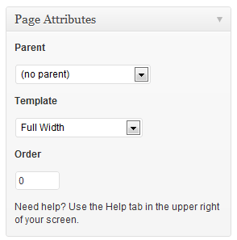
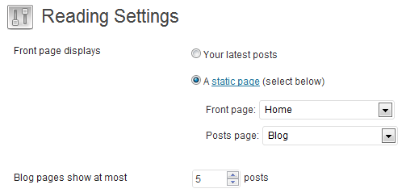
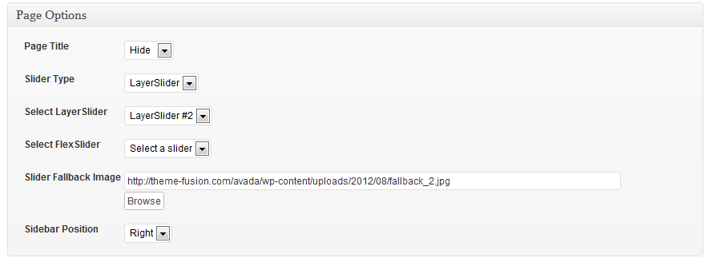
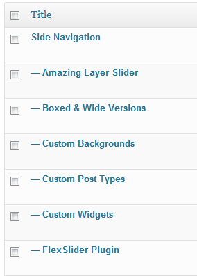
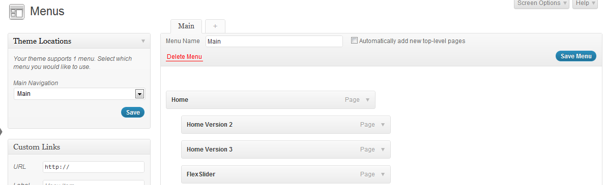
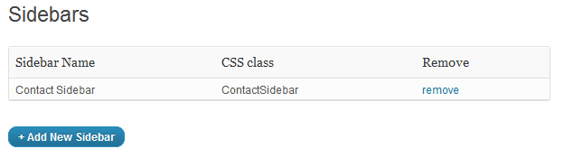

Created: 14th August, 2012
By: Theme Fusion
Support Forum
Thank you for purchasing our theme. If you have any questions that are beyond the scope of this help file, please feel free to post a support question on our forum here. Thanks so much!
Museo Slab 500 is the font used for all headings in our demo. It is a free font, but it is not allowed to be distributed commercially. Please use the link below to download the font. Be sure you are selecting the "Museo Slab 500" version, it is the only one that is $0. The other Museo Slab fonts cost money.
http://www.fontspring.com/fonts/exljbris/museo-slab
After downloading the font, install the theme, upload the font files in the "fonts" folder which is already created within the theme folder. Make sure you don't upload the Museo Slab folder but ALL the font files extracted from the museo slab download.
To activate Museo Slab, navigate to WP Admin -> Theme Options -> Appearance and select "Museo Slab" from headings font option.
To install this theme you must have a working version of WordPress already installed. For information in regard to installing the WordPress platform, please see the WordPress Codex - http://codex.wordpress.org/Installing_WordPress
Extract the zipped package downloaded from ThemeForest to your desktop, in the extracted package you will find Advance.zip file which is the wordpress theme.
You can install the theme in two ways:
FTP: Extract Avada.zip file and upload the extracted folder to /wp-content/themes/ folder on your server.
WordPress: Navigate to Appearance -> Add New Themes -> Upload page. Select Avada.zip file. Press the Install Now button to upload and install the theme.
After uploading the theme, you have to activate it. Navigate to Appearence -> Themes page to activate the theme.
If you are migration from a theme which used the native featured images functionality of WordPress. Please use Regenerate Thumbnails plugin to resize all the thumbnails.
We have include the exported XML file from our demo, this allows you to quickly set up your theme the same way our demo is set up. Please note, the XML file does not include images or the slider data. Instructions on how to do this are below.
1.The XML file is included within the download package which will be used to import the content (minus slider setup). To configure slider, read the documentation.
2. Navigate to WP Admin -> Tools -> Import.
3. Select and install WordPress importer.
4. Select the XML file and upload it. It will in few minutes install and upload all content with images.
5. Now navigate to WP Admin -> Appearance -> Menus page and select the newly created menu and assign it to "Main Navigation" location.
6. Next, navigate to WP Admin -> Settings -> Reading Settings and set a front page and a posts page.
Homepages are built through a combination of shortcodes as seen of the demo. To setup similar homepages, create a new page with "Full Width" page template and paste the following code in the HTML editor.

Homepage 1:
Homepage 2:
Homepage 3:
To setup one of these pages as Homepage, navigate to WP Admin -> Settings -> Reading Settings and set the newly created page as front page.

Avada supports two types of slides, LayerSlider and FlexSlider. Both of the sliders can be added to any page. Add / Edit any page and scrolldown until you see page options. The slider options are located there. Screenshot:

FlexSlider
To setup flexslider, follow:
LayerSlider WP
LayerSlider WP is a bit more complicated to setup. We have used our own bulit in skin, named "avada", which is a full width slider that extends the full width of the browser. The layer slider also comes with other skins that are not full width, they are all listed in the layer slider settings in your admin. The other pre-defined skins are: defaultskin, lightskin, darkskin and if you don't want to show any skin, use: noskin.
To set up your layer slider, navigate to LayerSlider WP on your left sidebar and a create a new slider. If you are using the "avada" skin, then you need to make sure you use these settings: width set to 100%, force responsiveness is set to disabled and skin name is set to "avada". This will make your layer slider look like the demo. But please keep in mind, the slider content in our demo is not included, each user has to make their own slides.
To create new slides, click on "Add New Layer" button and to add new content and animations over it, click on" add new sub layer" button for each different element you want to add. Once you've made your slides, hit save and then you can select the LayerSlider number from the WP page options as previously described.
Please Note: We have included a folder called "layer_slider_documentation" that contains the documentation from the author of the slider. We have also included another folder called "layer_slider_example_settings" that contains the exported slider data from our demo slides, and important notes with example settings and mages that show you how to correctly position your sublayers if you are using the "avada" skin. Both of those items are located in the "documentation" folder within the downloadable package, please refer to that for more info on how to setup layers / sublayers. We highly recommned reading over the "layer_slider_example_settigns.txt" file, it has a lot of good information and should be read if you have issues postitiong your sublayers. To always have your sublayers in the exact same position on any resolution, you need to add additional HTML/CSS markup to your sublyaers, and we have outlined how to do this in those files. If you do not want to have to add additional HTML/CSS to your sublyaers, then please use one of the default skins, such as "defaultskin".
Importing the Layer Slider Demo Data: We have included the exported data from our demo slides. You can import the demo data of the layer slider in the layer slider settings at the top, but this data is ONLY USED so you can see the settings we used on our slides. It does not include all the different images so it will not look like the slides in our demo. Please only import it if you want to see our settings. You will still need to "create a new layer slider" for your own slides.
Create a new page, empty content, a placeholder for blog page.
Navigate to WP Admin -> Settings -> Reading and change the posts page to the placeholder page for blog you just created. Posts will show up on the blog page.
Create a new page with full width template and paste the following code in the HTML editor:
About Us:
Services:
Create a new page and select "Contact" page template for the contact us form to show up.
To add a email address and map, scroll down and look for contact info options.
Create a new page and select "FAQs" page template.
To add new FAQs, navigate to WP Admin -> FAQs page.
To setup side navigation, create a new page and select "Side Navigation" template from the dropdown field. To show other pages on the side navigation, create new pages as child pages of the first page and make sure all of them also have "Side Navigation" as their page template.

To setup a portfolio page, create a new page and select "Portfolio One" to "Portfolio Four" from page template.
To add items to the portfolio, navigate to WP Admin -> Portfolio page.
Avada supports custom WordPress menu with two level dropdown support.
To setup the menus, navigate to Apperance -> Menus page. Enter a name for your menu and add links to the menu by using the options given on the left sidebar. You can manage your menus using the drag and drop functionality. After setting up your menu, select the menu you just created from the theme locations dropdown box and hit the "Save" button.

Avada as 2 widget areas which are for unlimited sidebars and footer. Avada comes with 10+ custom widgets. To setup sidebar and footer, navigate to Apperance -> Widgets and use the drag and drop interface to drop widgets into the sidebar or footer widget area.
Unlimited Sidebars
By default, Avada comes with one sidebar option, "Blog Sidebar", widgets in blog sidebar will show up as default on all pages. However, for wordpress pages, you can create custom sidebars and select a different sidebar with different pages for each widget. To create a sidebar, navigate to WP Admin -> Sidebars. After that, you can select the sidebar for your page by editing it.

The theme comes with a simple to use administration panel. You can access it by navigating to Appearance -> Theme Options. The theme options are conveniently spread over a number of tabs and each tab contains the options that pertain to a particular area of the theme.
Avada comes packed with 16+ shortcodes allowing you to add complex styled content with little effort. The shortcodes are available under the usual formatting options on the post / page text editor. Make sure you are on the "visual editor" tab, the shortcode bẗtons are on the second row. Simply hover over a button to see which shortcode it is and then click it and the shortcode will be automatically added, then you need to populate the content.
Avada uses the WordPress Post Thumbnails function, this way you can upload one image and WordPress will automatically resize it to all the different thumbnail sizes.
To set a post thumbnail for your post, go to Posts > Add New > Set Featured Image > the normal upload box will now appear, upload your image and click "Use as featured image".
Slideshow works on posts / gallery and portfolio.
For the slideshow to show up on the posts / portfolio page, apart from the post thumbnail, upload more images to the post. It will automatically build a slideshow.
For videos, just paste the video embed code while editing a post in the post options box.
The translation file is located in languages folder (/wp-content/themes/Avada/languages). Edit the .po file using POEdit, use the translation field to make replacements.
From the file menu, save file with your language name e.g de_DE.po. It will generate both a .po and .mo file for your translation.
Next edit wp-config.php located in the root folder of wordpress and define the WPLANG prefix with your language name which should be similar to the translation file name.
The CSS files are listed below and we have inlcuded a "custom CSS" field in the theme options for users to isnert their own custom CSS. Please be sure to put any custom CSS in that field and not in the all.css file. Anything in the custom CSS field will override the all.css file.
We've used the following images, icons or other files as listed.
Once again, thank you so much for purchasing this theme. As we said in the beginning, we will be happy to help you if you have any questions relating to this theme. We take pride in our work and care about our users. Thanks again!
Theme Fusion